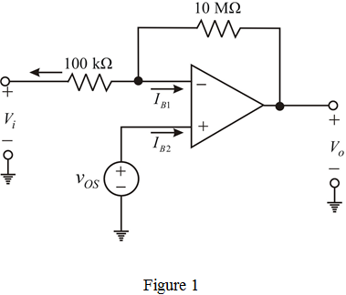
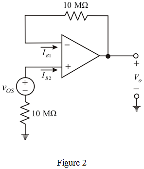

Calculate the output voltage, when the input is open.
Substitute  for
for  ,
,  for
for  in the equation.
in the equation.
…….. (1)
Calculate the output voltage, when the input is grounded.

Substitute for  ,
,  for
for  and
and  for
for  in the equation.
in the equation.
…….. (2)
(a)
Consider the following inverting amplifier circuit diagram.

Calculate the output voltage, when the input is open.
Substitute for , for in the equation.
…….. (1)
Calculate the output voltage, when the input is grounded.
Substitute for , for and for in the equation.
…….. (2)
Recall equation (2).
Substitute for  in the equation.
in the equation.
Find the input bias current,  of the amplifier.
of the amplifier.
It is know that,
Therefore, the input bias current,  is .
is .

(b)
Recall equation (1).
Substitute for  in the equation.
in the equation.
Therefore, the value of the input offset voltage,  is .
is .
Now,  resistor is connected between the positive input terminal and ground, the modified circuit is shown in Figure 2.
resistor is connected between the positive input terminal and ground, the modified circuit is shown in Figure 2.

Calculate the input offset current  .
.
Substitute  for
for  and
and  resistor for
resistor for  in the equation.
in the equation.
Therefore, the input offset current, is .